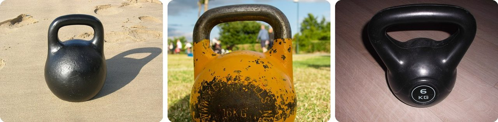
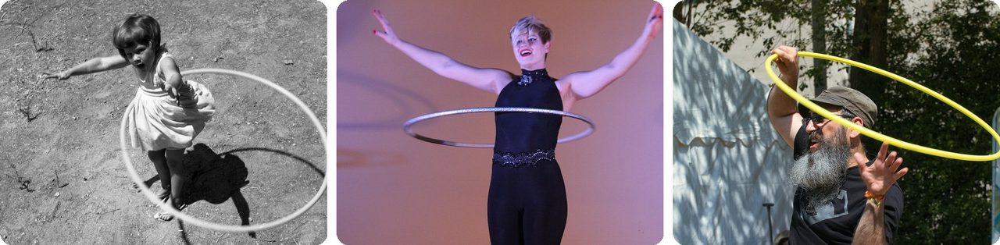

🌍 Top 10 Ejercicios en casa y rutinas rápidas para niños
20 de noviembre de 2026
1. 🇷🇺 La pesa rusa empezó como una pesa de mercado

En la Rusia del siglo XVIII, una girya (una bola de hierro fundido con asa) no era equipo de gimnasio. Los vendedores la usaban como pesa para medir granos en el mercado.Para el siglo XIX, los forzudos de circo ya la balanceaban frente al público, y pronto la gente empezó a levantarla como deporte. El tamaño clásico es un pud, una vieja unidad rusa de unos 16 kg (36 lb), más o menos lo que pesa un niño promedio de 4 años.
Y aquí está el truco: casi todo el peso queda por fuera de tu mano, no dentro de tu puño. Por eso, en un balanceo con pesa rusa, la fuerza sale de empujar la cadera hacia adelante, no de levantar con los brazos.
O sea, es una pesa de báscula de mercado que se escapó al gimnasio.
2. 🏴 La mancuerna en inglés es una campana que nunca suena
 En la Inglaterra del siglo XVII, tocar las campanas de la iglesia se volvió un pasatiempo, y la gente empezó a poner en sus casas máquinas de ejercicio que imitaban una campana. Cada una tenía dos barras cruzadas con pesos en las puntas, girando sobre un eje, y una cuerda colgando para jalar.
En la Inglaterra del siglo XVII, tocar las campanas de la iglesia se volvió un pasatiempo, y la gente empezó a poner en sus casas máquinas de ejercicio que imitaban una campana. Cada una tenía dos barras cruzadas con pesos en las puntas, girando sobre un eje, y una cuerda colgando para jalar.
Jalar la cuerda se sentía como tocar una campana de verdad, pero no había campana, así que no hacía ningún ruido. En inglés antiguo, mudo se decía "dumb". En 1711, el escritor Joseph Addison contó que hacía ejercicio con una "dumb bell" ("campana muda") en una revista llamada The Spectator.
Pero la idea de levantar pesas de mano es mucho más antigua: los antiguos griegos usaban unas llamadas halteres, y hasta las llevaban en el salto de longitud.
En otras palabras, es practicar con la campana, pero sin la campana.
3. 🇺🇸 El burpee se inventó como una prueba rápida del corazón
 En 1939, un científico estadounidense llamado Royal H. Burpee inventó el movimiento para su doctorado en la Universidad de Columbia. Su versión tenía solo cuatro pasos: agacharte con las manos en el piso, patear los pies hacia atrás a una plancha, regresarlos de un brinco y ponerte de pie.
En 1939, un científico estadounidense llamado Royal H. Burpee inventó el movimiento para su doctorado en la Universidad de Columbia. Su versión tenía solo cuatro pasos: agacharte con las manos en el piso, patear los pies hacia atrás a una plancha, regresarlos de un brinco y ponerte de pie.
Solo se hacía cuatro veces. Luego él medía tu pulso para ver qué tan rápido se calmaba tu corazón, una señal de qué tan bien bombea.
En 1942, el Ejército de EE. UU. lo convirtió en prueba de velocidad: ¿cuántos en 20 segundos? 8 era malo, 13 o más era excelente. Hoy el récord es de 38 burpees con el pecho tocando el piso en un minuto, uno cada 1.6 segundos más o menos.
Es un chequeo médico que terminó como el ejercicio que todos aman odiar.
4. 🇺🇸 Los jumping jacks se llaman como un juguete de cuerda
 Un "jumping jack" era un muñeco de madera de juguete. Jalas su cuerda y sus brazos y piernas se abren hacia los lados. Sueltas, y regresan de golpe.
Un "jumping jack" era un muñeco de madera de juguete. Jalas su cuerda y sus brazos y piernas se abren hacia los lados. Sueltas, y regresan de golpe.
La gente hacía el mismo movimiento como ejercicio y le tomó prestado el nombre al juguete. Una historia muy conocida dice que en 1885, un cadete mayor de la academia militar de West Point, John "Black Jack" Pershing, ponía a los nuevos a hacerlo mientras él jalaba una cuerda imaginaria.
El récord es de 136 jumping jacks en un minuto, logrado en Nepal en 2023. Eso es más de dos por segundo.
Cada vez que haces uno, estás imitando a un títere de juguete.
5. 🇯🇵 Un entrenamiento Tabata completo dura solo 4 minutos
 En 1996, el profesor japonés Izumi Tabata (田畑泉) probó un entrenamiento diminuto con patinadores de velocidad olímpicos. Pedalear en una bicicleta fija con todas tus fuerzas por 20 segundos, descansar 10 y repetir 8 veces. Eso son 4 minutos.
En 1996, el profesor japonés Izumi Tabata (田畑泉) probó un entrenamiento diminuto con patinadores de velocidad olímpicos. Pedalear en una bicicleta fija con todas tus fuerzas por 20 segundos, descansar 10 y repetir 8 veces. Eso son 4 minutos.
Después de 6 semanas, estos atletas mejoraron su resistencia casi tanto como un grupo que pedaleaba a ritmo constante 60 minutos al día. Y solo el grupo de 4 minutos mejoró también en los arranques cortos a toda velocidad.
El estudio usó una bicicleta, pero hoy ese mismo reloj de 20 segundos sí y 10 no se usa con todo tipo de movimientos.
Piénsalo como un entrenamiento completo que dura menos que una canción pop.
6. 🇺🇸 El Double Dutch creció en las banquetas de Nueva York con tendederos
 En el Double Dutch, dos personas giran dos cuerdas largas en direcciones opuestas mientras alguien salta entre ellas. En los años 40 y 50, las niñas negras de Nueva York lo convirtieron en un deporte de esquina, muchas veces usando cuerdas de tendedero.
En el Double Dutch, dos personas giran dos cuerdas largas en direcciones opuestas mientras alguien salta entre ellas. En los años 40 y 50, las niñas negras de Nueva York lo convirtieron en un deporte de esquina, muchas veces usando cuerdas de tendedero.
A principios de los 70, dos policías de Nueva York, Ulysses Williams y David Walker, escribieron reglas oficiales, y la primera competencia de verdad fue en 1974. Para 2009 ya era deporte oficial en las preparatorias públicas de la ciudad.
El nombre podría venir de un viejo modismo inglés: "double Dutch" quería decir palabras que suenan a puro disparate, una broma sobre lo confusas que se ven las cuerdas.
Básicamente, es saltar la cuerda con el doble de cuerda y el doble de ritmo.
7. 🇦🇺 La locura del hula hula empezó con aros de bambú en Australia

Una maestra de Sídney, Australia, ponía a sus alumnos a girar aros de bambú en la cintura en la clase de educación física. Los aros se hicieron tan populares que una juguetería australiana empezó a fabricarlos de plástico en 1957 y vendió 400,000 ese año.Luego la empresa estadounidense Wham-O hizo su propia versión de plástico y la llamó hula hoop, por el baile hawaiano hula y su movimiento de cadera. En 1958 costaba $1.98 dólares.
Lo que pasó después fue increíble: 25 millones de aros vendidos en menos de cuatro meses. Unos 200,000 aros al día.
Un juguete de la clase de deportes se volvió viral mucho antes de internet.
8. 🇺🇸 El trampolín se llama como un trampolín de clavados
 En 1936, dos gimnastas de la Universidad de Iowa, George Nissen y Larry Griswold, vieron a los trapecistas de circo rebotar en su red de seguridad. Estiraron una lona sobre un marco de hierro con resortes y construyeron el primer trampolín moderno.
En 1936, dos gimnastas de la Universidad de Iowa, George Nissen y Larry Griswold, vieron a los trapecistas de circo rebotar en su red de seguridad. Estiraron una lona sobre un marco de hierro con resortes y construyeron el primer trampolín moderno.
Mientras lo presentaba en México a finales de los años 30, Nissen escuchó la palabra española trampolín, que ahí quería decir "tabla de clavados", y la tomó como nombre.
Y aquí viene la sorpresa: la lona casi no se estira. Los resortes de la orilla guardan la energía y te avientan de regreso hacia arriba. En la Segunda Guerra Mundial, la Marina de EE. UU. hasta usó trampolines para ayudar a los pilotos a saber dónde es arriba cuando dan vueltas en el aire.
Así que el rebote vive en los resortes, no en la lona.
9. 🇺🇸 El médico de un presidente de EE. UU. inventó un juego con una pelota de 6 libras
 Después de que Herbert Hoover ganó las elecciones de 1928, su médico, Joel T. Boone, quería mantenerlo en forma. Inventó el Hooverball, basado en un juego que Hoover vio jugar a marineros en un acorazado de la Marina.
Después de que Herbert Hoover ganó las elecciones de 1928, su médico, Joel T. Boone, quería mantenerlo en forma. Inventó el Hooverball, basado en un juego que Hoover vio jugar a marineros en un acorazado de la Marina.
Es como el voleibol, pero atrapas un balón medicinal pesado y lo lanzas de regreso sobre una red de 8 pies (2.4 m). La pelota pesa unas 6 libras (2.7 kg), más o menos como una bola de boliche chica. Se cuentan los puntos como en el tenis.
La gente todavía lo juega: cada año hay un campeonato nacional en West Branch, Iowa.
Imagina un voleibol donde tienes que atrapar una bola de boliche.
10. 🇨🇿 El récord mundial de plancha dura más que un día de escuela
 Una plancha parece fácil: sostener la posición de lagartija sobre los antebrazos y las puntas de los pies, sin moverte. Pero justo por quedarte quieto, los músculos de tu panza, espalda y hombros trabajan todo el tiempo.
Una plancha parece fácil: sostener la posición de lagartija sobre los antebrazos y las puntas de los pies, sin moverte. Pero justo por quedarte quieto, los músculos de tu panza, espalda y hombros trabajan todo el tiempo.
En mayo de 2023, Josef Šálek, de la República Checa, aguantó una durante 9 horas, 38 minutos y 47 segundos. Eso es más que un día entero de escuela.
Y sirve para más que el abdomen. Una gran revisión de 270 estudios encontró que los ejercicios de quedarse quieto, como la plancha y la sentadilla en la pared, bajaban la presión arterial mejor que otros tipos de ejercicio.
Es como un concurso de miradas contra el piso.
Dato curioso
Las pesas rusas y las mancuernas tenían un primo: las mazas indias, unos bastones de madera que, según se cree, los soldados de India y Persia balanceaban para ganar fuerza. Las tradicionales podían pesar hasta 35 kg (77 lb), pero el ejército británico adoptó después versiones ligeras de 2 kg (4.4 lb), y balancear mazas hasta fue prueba olímpica en 1904 y 1932. Luego, en el siglo XIX, un hombre llamado DeWitt Cook empezó a usarlas para hacer malabares, y de ahí salieron las clavas que lanzan los malabaristas hoy. Los trucos de circo y los malabares esconden muchas más sorpresas así.
Créditos de las fotos (Wikimedia Commons)
- #1: Kettlebell truebalance romeike.jpg by Detlef Romeike, CC BY-SA 2.5
- #1: Competition kettlebell 16 kilo.jpg by Knuckles, CC BY-SA 3.0
- #1: Kettlebell voor fitness 6 kg.jpg by Richardkiwi, CC BY-SA 4.0
- #2: Colorful dumbbells of various sizes.jpg by Ser Amantio di Nicolao, CC BY-SA 4.0
- #2: Rudolf Ismayr's Dumbbells, 1936.jpg by New York-air, CC BY-SA 4.0
- #2: Kurzhanteln 2 x 15 kg 2v2.jpg by Singlespeedfahrer, CC0
- #3: Airborne Burpee.jpg by Marine Corps photo by Sgt. Ryan Young, Public domain
- #3: Burpee 2 Squat.jpg by Taco fleur, CC BY-SA 4.0
- #3: CrossFit Open 12.1 - Burpees - Chris, Shane, and Adam, and Matt.jpg by Travis Isaacs (photos · photo sets), CC BY 2.0
- #4: Elementary school students conduct jumping jacks to warm up USMC-120214-M-MA421-288.jpg by Lance Cpl. Ryan M. Joyner, Public domain
- #4: Marie Anker um 1875.jpg by upload by Adrian Michael, Public domain
- #4: John Walters, right, a physiologist with the Health and Wellness Center, leads children in jumping jacks prior to participating in the Children's Mobility Line at Dover Air Force Base, Del., Aug. 22, 2013 130822-F-BO262-028.jpg by Roland Balik, Public domain
- #5: Women's 5000m Speed Skating Pair 8.jpg by Robert Scoble, CC BY 2.0
- #5: Stationary bikes at a gym.jpg by KeepActive Australia from Melbourne, VIC, Australia, CC BY-SA 4.0
- #5: A session of a boot camp exercise at Orji Flyover Owerri, Imo State.jpg by Dolphyb, CC BY-SA 4.0
- #6: Michelle Obama and kids double-dutch jump rope - P071511CK-0303 (6047842208).jpg by The White House from Washington, DC, Public domain
- #6: Double Dutch - The Ropestylers 3.jpg by Brandon Mongila, CC BY-SA 4.0
- #6: Elders of National Double Dutch League Performing.jpg by Kbwords, CC BY-SA 4.0
- #7: Girl twirling Hula Hoop, 1958.jpg by GeorgeLouis, CC BY-SA 3.0
- #7: One hula hoop (flickr) by quinn.anya, CC BY-SA 2.0
- #7: Hula Hoop OBS.jpg by Schorle, CC BY-SA 4.0
- #8: Girl jumping on trampoline with belts.jpg by Dmitry Rozhkov, CC BY-SA 3.0
- #8: Trampoline jump king.JPG by Øyvind Holmstad, CC0
- #8: Dian Nissen jumping at a trampoline park.jpg by Triffis, CC BY-SA 3.0
- #9: Hooverball Game on White House Lawn - DPLA - 7489e19fdef6a93ca88e3fe4f391f0c2.jpg by National Archives and Records Administration. Office of Presidential Libraries. Herbert Hoover Library. 4/1/1985, Public domain
- #9: MALS-24 latches onto Hooverball 130125-M-RT812-198.jpg by Christine Cabalo, Public domain
- #9: Herbert Hoover NHS - Hooverball trophies.jpg by Ser Amantio di Nicolao, CC BY-SA 4.0
- #10: Plank.jpg by Jaykayfit, CC BY-SA 3.0
- #10: Woman performing plank exercise at home gym.jpg by Shixart1985, CC BY 2.0
- #10: Medicine Ball Plank.jpg by Jgcastor, CC BY-SA 3.0


.jpg){kind=link}